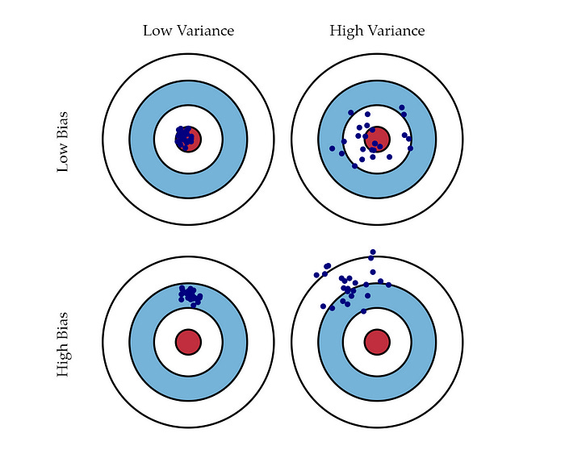
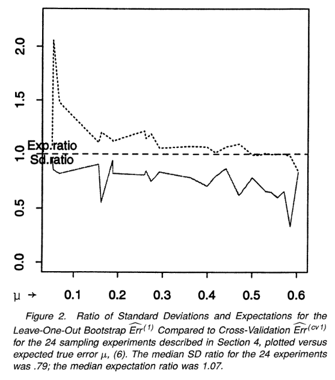
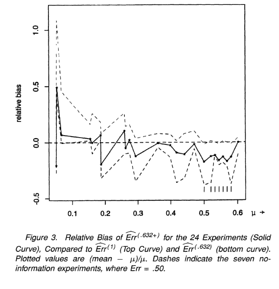
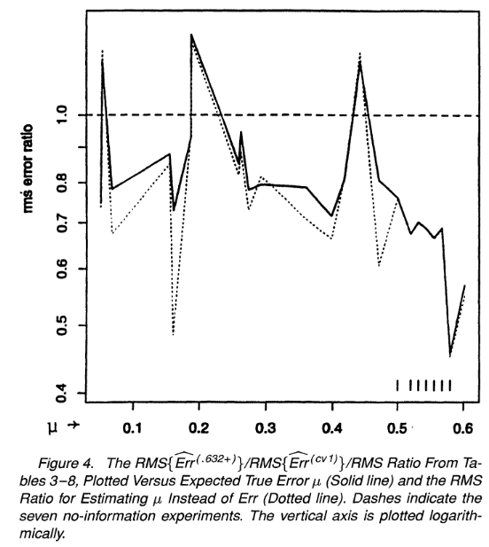
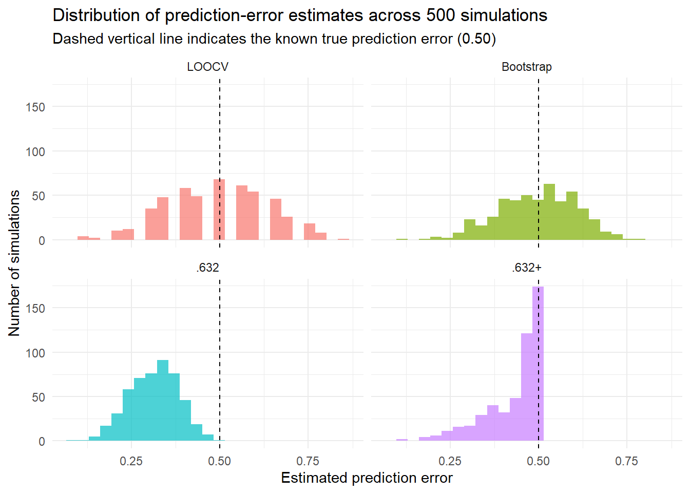

| Sample | Draw_1 | Draw_2 | Draw_3 | Draw_4 | Draw_5 | Omitted |
|---|---|---|---|---|---|---|
| Bootstrap 1 | 2 | 5 | 1 | 1 | 2 | 3, 4 |
| Bootstrap 2 | 5 | 4 | 4 | 4 | 3 | 1, 2 |
| Bootstrap 3 | 3 | 1 | 1 | 5 | 2 | 4 |
2 The .632+ Bootstrap Method
2.1 Efron & Tibshirani (1997)
Title: Improvements on Cross-Validation: The .632+ Bootstrap Method
Journal: Journal of the American Statistical Association (JASA)
2.1.1 Problem
When a prediction model is trained on a sample of data, an important question is how accurately it will perform on new observations that were not used to train the model. Because the true prediction error on future data is usually unknown, it must be estimated from the available sample.
Cross-validation is commonly used for this purpose and can provide a nearly unbiased estimate of prediction error. However, cross-validation estimates can have high variability, meaning that the estimated error may change substantially across different samples drawn from the same population.
Bootstrap methods provide another way to estimate prediction error. By repeatedly resampling the observed data and averaging across many bootstrap samples, they can produce more stable error estimates with lower variability. However, this reduction in variability can come at the cost of increased bias.
This creates a bias–variance trade-off: an estimator with very low bias may still perform poorly if it is highly variable, while a more stable estimator may perform better overall even if it introduces some bias. Efron and Tibshirani therefore investigate whether bootstrap-based methods can achieve a better balance between bias and variability when estimating prediction error.

The center of each target represents the true value. Bias describes how far the estimates are systematically shifted away from the truth, while variance describes how widely the estimates are spread across repeated samples. Ideally, an estimator should have both low bias and low variance.
2.1.3 Study design
The authors evaluated the performance of the .632+ estimator using a series of 24 sampling experiments designed to represent different prediction problems.
The experiments varied several characteristics of the prediction problem, including:
- training sample size
- number of predictors
- number of outcome classes
- strength of the relationship between the predictors and outcome
- type of prediction rule
Twenty-one of the experiments involved binary classification, while three involved four or more classes. Classification performance was evaluated using 0-1 loss, where each prediction was recorded as either correct or incorrect.
Most of the experiments used simulated data, which allowed the authors to know the underlying data-generating distribution and therefore determine the true prediction error against which the different error estimators could be compared.
The first 12 experiments were each repeated using 200 independently generated training datasets, while the remaining 12 experiments used 50 repetitions. This repeated-sampling design allowed the authors to examine not only the average bias of each error estimator, but also how much the estimates varied across different training samples.
The experiments included both settings with useful predictive information and no-information settings, in which the predictors were independent of the outcome. In the binary no-information experiments, the true prediction error was approximately 50%.
The final experiments also included real classification datasets from the UC Irvine Machine Learning Repository, allowing the methods to be evaluated beyond completely simulated examples.
For each experiment, the authors compared several methods for estimating prediction error, including leave-one-out cross-validation, 5-fold and 10-fold cross-validation, the leave-one-out bootstrap estimator, the original .632 estimator, and the new .632+ estimator.
The bootstrap-based methods used 50 bootstrap replications for each simulated training dataset.
The performance of each error estimator was summarized using three quantities:
- Expectation (Exp): the average estimated prediction error across repeated samples, which can be compared with the true error to assess bias.
- Standard deviation (SD): how much the estimated prediction error varied across repeated samples.
- Root mean squared error (RMS): the overall discrepancy between the estimated and true prediction error, reflecting both bias and variability.
2.1.4 Classifier implementation
The authors evaluated the different prediction-error estimators using several classification rules with different levels of flexibility and stability. This was important because the performance of cross-validation and bootstrap error estimates can depend on the type of prediction rule being evaluated.
The classifiers included:
- Fisher’s linear discriminant function (LDF)
- 1-nearest neighbor (1-NN)
- 3-nearest neighbor (3-NN)
- classification trees
- quadratic discriminant function (QDF)
Using several different classifiers allowed the authors to examine whether the .632+ estimator performed well across both relatively smooth prediction rules and more flexible or unstable rules.
2.1.4.1 Linear discriminant function (LDF)
The linear discriminant function (LDF), also known as linear discriminant analysis, is a classification method that assigns an observation to the class it is most likely to belong to based on its predictor values.
Suppose an observation has \(p\) predictors:
\[ \mathbf{x}=(x_1,x_2,\ldots,x_p)^T. \]
Here, \(\mathbf{x}\) represents the complete set of predictor values for one observation, and \(T\) indicates that they are written as a column vector.
LDF assumes that the predictors within each class approximately follow a multivariate normal distribution:
\[ \mathbf{X}\mid Y=k \sim N_p(\boldsymbol{\mu}_k,\Sigma). \]
In this notation:
- \(\boldsymbol{\mu}_k\) is the mean predictor vector for class \(k\), representing the typical predictor values for that class.
- \(\Sigma\) is the covariance matrix, which describes the variability of the predictors and how they are correlated.
- LDF assumes that the same covariance matrix \(\Sigma\) applies to every class.
For each possible class, LDF calculates a discriminant score:
\[ \delta_k(\mathbf{x}) = \mathbf{x}^T\Sigma^{-1}\boldsymbol{\mu}_k - \frac{1}{2} \boldsymbol{\mu}_k^T\Sigma^{-1}\boldsymbol{\mu}_k + \log(\pi_k). \]
The components of this score can be interpreted as follows:
- \(\mathbf{x}^T\Sigma^{-1}\boldsymbol{\mu}_k\) measures how well the new observation matches the predictor profile of class \(k\), while accounting for predictor variability and correlation.
- \(-\frac{1}{2}\boldsymbol{\mu}_k^T\Sigma^{-1}\boldsymbol{\mu}_k\) adjusts the score for the location of the class mean.
- \(\pi_k\) is the prior probability of belonging to class \(k\), so \(\log(\pi_k)\) allows more common classes to receive appropriate weight.
The observation is assigned to the class with the largest discriminant score:
\[ \widehat{Y} = \underset{k}{\arg\max}\, \delta_k(\mathbf{x}). \]
Here, \(\arg\max\) simply means choose the class \(k\) that produces the largest score.
Because all classes are assumed to share the same covariance matrix, the resulting decision boundary is linear. LDF therefore represents a relatively smooth classification rule compared with more flexible methods such as nearest-neighbor classification.
2.1.4.2 1-nearest neighbor
The 1-nearest-neighbor (1-NN) classifier predicts the class of a new observation by finding the most similar observation in the training dataset.
Similarity is usually measured using Euclidean distance:
\[ d(\mathbf{x}_i,\mathbf{x}_j) = \sqrt{ \sum_{m=1}^{p} (x_{im}-x_{jm})^2 }. \]
Here:
- \(\mathbf{x}_i\) and \(\mathbf{x}_j\) are two observations.
- \(p\) is the number of predictors.
- \(x_{im}\) is the value of predictor \(m\) for observation \(i\).
- \(x_{jm}\) is the value of predictor \(m\) for observation \(j\).
- For each predictor, the difference between the two observations is squared.
- These squared differences are added together and the square root is taken.
For example, if there are two predictors and the observations are
\[ \mathbf{x}_i=(2,3) \qquad\text{and}\qquad \mathbf{x}_j=(5,7), \]
then
\[ d(\mathbf{x}_i,\mathbf{x}_j) = \sqrt{(2-5)^2+(3-7)^2} = \sqrt{9+16} = 5. \]
For a new observation \(\mathbf{x}_0\), 1-NN compares its distance with every observation in the training dataset and identifies the one with the smallest distance:
\[ j^* = \underset{j}{\arg\min}\, d(\mathbf{x}_0,\mathbf{x}_j). \]
Here, \(\arg\min\) means choose the training observation \(j\) that gives the smallest distance. The symbol \(j^*\) therefore represents the index of the nearest training observation.
The new observation is then assigned the same class as that nearest neighbor:
\[ \widehat{Y}_0=Y_{j^*}. \]
Here:
- \(\widehat{Y}_0\) is the predicted class for the new observation.
- \(Y_{j^*}\) is the actual class of its nearest training observation.
Unlike LDF, 1-NN can create highly irregular decision boundaries because its prediction can change whenever a different training observation becomes the closest one.
2.1.4.3 3-nearest neighbor
The 3-nearest-neighbor (3-NN) classifier follows the same general principle as 1-NN but uses the three closest training observations rather than only one.
For a new observation \(\mathbf{x}_0\), the distance to every training observation is calculated in the same way as for 1-NN. The three observations with the smallest distances are then selected.
The predicted class is determined by majority vote among those three neighbors.
For example, if the three nearest observations belong to
\[ \{A,A,B\}, \]
then two of the three neighbors belong to class \(A\), so the prediction is
\[ \widehat{Y}_0=A. \]
In general, 3-NN can be thought of as assigning the new observation to the class that appears most frequently among its three nearest neighbors.
Because the prediction depends on several nearby observations instead of only one, 3-NN is generally less sensitive to a single unusual training observation and therefore smoother than 1-NN.
However, it remains a local and relatively flexible prediction rule because the classification still depends heavily on the observations located near the new data point.
Including both 1-NN and 3-NN allowed the authors to examine how the prediction-error estimators behaved when the flexibility of the nearest-neighbor classifier changed.
2.1.4.4 Quadratic discriminant function (QDF)
The quadratic discriminant function (QDF) is closely related to LDF, but it makes a less restrictive assumption about how the predictors vary within each class.
LDF assumes that all classes share the same covariance matrix:
\[ \mathbf{X}\mid Y=k \sim N_p(\boldsymbol{\mu}_k,\Sigma). \]
QDF instead allows each class to have its own covariance matrix:
\[ \mathbf{X}\mid Y=k \sim N_p(\boldsymbol{\mu}_k,\Sigma_k). \]
Here:
- \(\boldsymbol{\mu}_k\) is the mean predictor vector for class \(k\).
- \(\Sigma_k\) is the covariance matrix for class \(k\).
- The subscript \(k\) indicates that the pattern of variability and correlation between predictors is allowed to differ across classes.
For each possible class, QDF calculates a discriminant score:
\[ \delta_k(\mathbf{x}) = -\frac{1}{2}\log|\Sigma_k| -\frac{1}{2} (\mathbf{x}-\boldsymbol{\mu}_k)^T \Sigma_k^{-1} (\mathbf{x}-\boldsymbol{\mu}_k) + \log(\pi_k). \]
The main components can be interpreted as follows:
- \((\mathbf{x}-\boldsymbol{\mu}_k)\) measures how far the new observation is from the mean of class \(k\).
- \(\Sigma_k^{-1}\) adjusts that distance for the variability and correlations within class \(k\).
- \(|\Sigma_k|\) is the determinant of the covariance matrix and reflects the overall spread of the class distribution.
- \(\pi_k\) is the prior probability of belonging to class \(k\).
The observation is assigned to the class with the largest discriminant score:
\[ \widehat{Y} = \underset{k}{\arg\max}\, \delta_k(\mathbf{x}). \]
As before, \(\arg\max\) simply means choose the class that produces the largest score.
The key difference from LDF is that QDF allows \(\Sigma_k\) to differ between classes. Because the covariance structure is no longer shared, the quadratic terms do not cancel, and the resulting decision boundary can be curved rather than linear.
QDF is therefore more flexible than LDF, but it also requires estimating more parameters from the training data.
2.1.4.5 Why use several different classifiers?
The classifiers used in the experiments represent prediction rules with different levels of smoothness, flexibility, and stability.
| Prediction rule | General behavior |
|---|---|
| LDF | Relatively smooth, linear decision boundary |
| 1-NN | Highly local and flexible |
| 3-NN | Local but smoother than 1-NN |
| Classification tree | Flexible and potentially unstable |
| QDF | More flexible discriminant rule with quadratic boundaries |
This diversity was important because the authors were not only interested in whether .632+ worked for one particular classifier. They wanted to determine whether its bias and variability advantages remained useful across prediction problems with substantially different types of prediction rules.
Using classifiers with different levels of flexibility also allowed the authors to examine how the error estimators behaved when the underlying prediction rule was more or less prone to overfitting or instability.
2.1.5 Bootstrap implementation
For each training dataset, the authors generated multiple bootstrap samples and used them to estimate prediction error. In the simulation experiments, each bootstrap-based estimate used
\[ B = 50 \]
bootstrap replications.
Each bootstrap sample contained \(n\) draws with replacement from the original training dataset of \(n\) observations. Because sampling is performed with replacement, some observations may appear multiple times in a bootstrap sample, while others may not appear at all.
The prediction rule was fitted separately to each bootstrap sample.
The important feature of the procedure is that an original observation was evaluated only using bootstrap samples in which that observation had not been selected. This ensures that the observation being tested was not used to train that particular model.
Suppose the original training dataset is
\[ \mathcal{D} = \{(\mathbf{x}_i,y_i)\}_{i=1}^{n}, \]
where \(\mathbf{x}_i\) represents the predictor values for observation \(i\) and \(y_i\) represents its true class.
Let
\[ \mathcal{D}^{*b} \]
represent bootstrap sample \(b\), where
\[ b=1,\ldots,B. \]
The asterisk indicates that this is a resampled version of the original dataset, and \(b\) identifies which bootstrap replication is being considered.
For each original observation \(i\), define
\[ I_i^b = \begin{cases} 1, & \text{if observation } i \text{ is absent from bootstrap sample } b,\\ 0, & \text{if observation } i \text{ is included in bootstrap sample } b. \end{cases} \]
Thus, \(I_i^b\) tells us whether observation \(i\) can be used as a test observation for bootstrap sample \(b\).
If
\[ I_i^b=1, \]
the model fitted using bootstrap sample \(b\) is used to predict observation \(i\).
For classification with 0-1 loss, define the prediction error as
\[ Q_i^b = \begin{cases} 1, & \text{if the model predicts observation } i \text{ incorrectly},\\ 0, & \text{if the prediction is correct}. \end{cases} \]
For each original observation, the prediction errors are then averaged across only the bootstrap samples in which that observation was omitted:
\[ \widehat{e}_i = \frac{ \sum_{b=1}^{B} I_i^b Q_i^b }{ \sum_{b=1}^{B} I_i^b }. \]
The numerator,
\[ \sum_{b=1}^{B} I_i^b Q_i^b, \]
counts the prediction errors for observation \(i\) across bootstrap samples in which it was left out.
The denominator,
\[ \sum_{b=1}^{B} I_i^b, \]
counts how many bootstrap samples left observation \(i\) out.
Their ratio therefore represents the average prediction error for observation \(i\) when it was evaluated using models that had not been trained on it.
Finally, these observation-specific errors are averaged across all \(n\) original observations:
\[ \widehat{\mathrm{Err}}^{(1)} = \frac{1}{n} \sum_{i=1}^{n} \widehat{e}_i. \]
This gives the leave-one-out bootstrap error.
Conceptually, this procedure is similar to cross-validation because an observation is evaluated only by models that were trained without that observation. The difference is that bootstrap estimation repeatedly resamples the training dataset with replacement and averages prediction errors across many different resampled training sets.
The complete bootstrap procedure can therefore be summarized as:
- Draw a bootstrap sample of size \(n\) from the original training dataset with replacement.
- Fit the prediction rule using that bootstrap sample.
- Identify the original observations that were not selected in the bootstrap sample.
- Use the fitted model to predict those omitted observations.
- Record whether each prediction is correct or incorrect.
- Repeat the process for \(B=50\) bootstrap samples.
- For each original observation, average its prediction errors across the bootstrap samples in which it was omitted.
- Average these observation-level errors to obtain \(\widehat{\mathrm{Err}}^{(1)}\).
flowchart TD
A["Original training dataset of n observations"] --> B["Draw bootstrap sample of size n with replacement"]
B --> C["Fit prediction rule to bootstrap sample"]
C --> D["Identify observations omitted from this bootstrap sample"]
D --> E["Predict the omitted observations"]
E --> F["Record 0-1 prediction errors"]
F --> G["Repeat for B = 50 bootstrap samples"]
G --> H["Average errors for each observation across samples where it was omitted"]
H --> I["Average across all observations"]
I --> J["Leave-one-out bootstrap error"]
Once \(\widehat{\mathrm{Err}}^{(1)}\) has been calculated, it can be combined with the apparent training error to obtain the original .632 estimate:
\[ \widehat{\mathrm{Err}}_{.632} = 0.368\,\mathrm{err} + 0.632\,\widehat{\mathrm{Err}}^{(1)}. \]
Here:
- \(\mathrm{err}\) is the apparent training error, calculated on the same observations used to fit the model.
- \(\widehat{\mathrm{Err}}^{(1)}\) is the leave-one-out bootstrap error, calculated using observations that were omitted from the bootstrap samples used for training.
The apparent training error is usually optimistic, while the leave-one-out bootstrap error can be somewhat pessimistic. The .632 estimator combines the two, giving 36.8% weight to the apparent training error and 63.2% weight to the bootstrap error.
However, this fixed weighting can still produce an overly optimistic estimate when the model strongly overfits the training data.
To address this problem, the .632+ estimator first measures the degree of overfitting using the relative overfitting rate, \(R\):
\[ R = \frac{ \widehat{\mathrm{Err}}^{(1)}-\mathrm{err} }{ \gamma-\mathrm{err} }. \]
Here, \(\gamma\) represents the no-information error rate, or the error expected if the predictors contained no useful information about the outcome.
Conceptually:
- \(R\approx0\) indicates little evidence of overfitting.
- \(R\approx1\) indicates severe overfitting, where performance on unseen observations approaches the no-information error level.
The value of \(R\) is then used to calculate an adaptive bootstrap weight:
\[ w = \frac{0.632}{1-0.368R}. \]
When there is little overfitting and \(R\) is close to 0,
\[ w\approx0.632, \]
so the .632+ estimator behaves similarly to the original .632 estimator.
As overfitting becomes more severe and \(R\) approaches 1,
\[ w\rightarrow1. \]
The .632+ estimator therefore places progressively more weight on the bootstrap error and less weight on the potentially overly optimistic training error.
The final .632+ estimate is
\[ \widehat{\mathrm{Err}}_{.632+} = (1-w)\mathrm{err} + w\widehat{\mathrm{Err}}^{(1)}. \]
Thus, the same set of bootstrap replications first provides the leave-one-out bootstrap error, which is then used to calculate both the .632 and .632+ prediction-error estimates. The key difference is that .632 uses fixed weights, whereas .632+ adapts the weights according to the estimated degree of overfitting.
2.1.6 Main findings
The results showed that no single method was best in every respect. Cross-validation tended to have relatively low bias, while bootstrap-based methods generally produced less variable estimates of prediction error.
2.1.6.1 Bootstrap smoothing reduced variability
The first important finding was that the leave-one-out bootstrap estimate, \(\widehat{\mathrm{Err}}^{(1)}\), was consistently less variable than leave-one-out cross-validation.
Across the 24 experiments, the median ratio of the standard deviation of the bootstrap estimate to the standard deviation of the cross-validation estimate was
\[ \frac{ SD\left(\widehat{\mathrm{Err}}^{(1)}\right) }{ SD\left(\widehat{\mathrm{Err}}_{\mathrm{CV}}\right) } = 0.79. \]
This means that the bootstrap error estimate typically had substantially lower variability than leave-one-out cross-validation.
The authors noted that this reduction in variability was roughly equivalent to increasing the training sample size by about 60%.

Source: Efron & Tibshirani (1997), Figure 2.
However, the bootstrap estimate was not unbiased. The average bootstrap error tended to be slightly higher than the cross-validation error, illustrating the trade-off between reduced variability and increased bias.
2.1.6.2 The original .632 estimator could be too optimistic
The original .632 estimator reduced the upward bias of the leave-one-out bootstrap estimate by combining it with the apparent training error.
However, in prediction rules that strongly overfit the training data, particularly nearest-neighbor classifiers, the .632 estimator could become substantially biased downward.
This occurred because the apparent training error could be extremely small even when prediction performance on new data was poor. The fixed 36.8% weight placed on this optimistic training error could therefore pull the .632 estimate too far downward.
The .632+ estimator was designed to reduce this problem by increasing the weight placed on the bootstrap error when evidence of overfitting was strong.
2.1.6.3 .632+ improved the bias–variance compromise
Across the simulation experiments, the .632+ estimator generally provided a compromise between the upward bias of the leave-one-out bootstrap estimator and the downward bias that could occur with the original .632 estimator.

Source: Efron & Tibshirani (1997), Figure 3.
The purpose of the adaptive weighting in .632+ was therefore not to eliminate bias completely, but to prevent the strong optimistic bias that could occur with .632 while retaining much of the reduction in variability obtained through bootstrap smoothing.
2.1.6.4 .632+ had the lowest overall estimation error
Because an estimator can have low bias but still perform poorly if it is highly variable, the authors also compared the methods using root mean squared error (RMS).
Across the 24 experiments, the .632+ estimator was the best overall performer in terms of RMS error.
The authors compared the RMS error of .632+ with that of leave-one-out cross-validation using
\[ \frac{ RMS\left(\widehat{\mathrm{Err}}_{.632+}\right) }{ RMS\left(\widehat{\mathrm{Err}}_{\mathrm{CV}}\right) }. \]
The median value of this ratio across the 24 experiments was
\[ 0.78. \]
A value below 1 indicates that .632+ had lower RMS error than leave-one-out cross-validation. A median ratio of 0.78 therefore indicates that the overall estimation error of .632+ was substantially smaller across the experiments.

Source: Efron & Tibshirani (1997), Figure 4.
Overall, the results suggest that the main advantage of .632+ was not that it was completely unbiased. Instead, it achieved a better balance between bias and variability, resulting in lower overall prediction-error estimation error across a wide range of classification problems.
2.1.7 Main conclusion: stop doing X, start doing Y
Stop: assuming that an approximately unbiased prediction-error estimator is necessarily the best estimator if its estimates are highly variable, and avoid relying on the original .632 estimator when strong overfitting may make the apparent training error extremely optimistic.
Start: consider the .632+ bootstrap estimator as a way to obtain a better balance between bias and variability, particularly when the prediction rule may be unstable or prone to overfitting.
Takeaway: In the authors’ simulation experiments, the .632+ estimator was the best overall performer, combining relatively low variability with only moderate bias. Its main advantage was not that it completely eliminated bias, but that its adaptive weighting produced a better overall bias–variance compromise than the competing methods.
The authors nevertheless caution that these conclusions are based on a finite set of simulation experiments and should not be interpreted as evidence that .632+ will necessarily outperform cross-validation in every prediction problem.
2.1.8 Proposed computational exploration
To illustrate the main argument of Efron and Tibshirani, I will simulate a simple no-information binary classification problem using a 1-nearest-neighbor classifier. This simulation is designed as a simplified reproduction of Experiment 8 from Efron and Tibshirani, which used a 1-nearest-neighbor classifier with \(n=20\), two predictors, and a no-information data-generating process in which the true prediction error was 0.50.
Each simulated dataset will contain \(n=20\) observations and two normally distributed predictors. The binary outcome will be generated independently of the predictors, so there is no true predictive signal and the true prediction error is
\[ \mathrm{Err}=0.50. \]
For each simulated dataset, I will calculate:
- the apparent training error,
- leave-one-out cross-validation error,
- leave-one-out bootstrap error using \(B=50\) bootstrap samples,
- the .632 estimate,
- and the .632+ estimate.
The complete simulation will be repeated 500 times using independently generated datasets. Repeating the experiment allows the behavior of each prediction-error estimator to be evaluated across samples.
Following the general evaluation approach used by Efron and Tibshirani, the estimators will be compared using:
- Exp: the average estimated prediction error across simulations,
- SD: the standard deviation of the estimates across simulations,
- RMS: the root mean squared error relative to the known true error.
Bias will also be calculated as
\[ \mathrm{Bias} = \mathrm{Exp} - \mathrm{Err}, \]
to show whether each estimator tends to overestimate or underestimate the true prediction error.
This exploration is intended to demonstrate how strong overfitting can make the original .632 estimator overly optimistic and how the adaptive weighting of .632+ can improve the overall bias–variance compromise.
2.1.9 Planned figure
The main figure will compare the distributions of the four prediction-error estimators across the repeated simulations:
\[ \text{LOOCV}, \qquad \widehat{\mathrm{Err}}^{(1)}, \qquad \widehat{\mathrm{Err}}_{.632}, \qquad \widehat{\mathrm{Err}}_{.632+}. \]
A vertical reference line at
\[ \mathrm{Err}=0.50 \]
will indicate the known true prediction error. The location of each distribution relative to this line will illustrate bias, while the spread of each distribution will illustrate variability.
2.1.10 Computational exploration
2.1.10.1 Phase 1: Define the functions used in the simulation
The computational exploration requires two functions. The first performs prediction using a 1-nearest-neighbor (1-NN) classifier. The second generates one no-information dataset and calculates all prediction-error estimates for that dataset.
2.1.10.1.1 1-NN prediction function
For a new observation \(\mathbf{x}_0\), 1-NN compares it with every training observation \(\mathbf{x}_j\) using Euclidean distance:
\[ d(\mathbf{x}_0,\mathbf{x}_j) = \sqrt{ \sum_{m=1}^{p} (x_{0m}-x_{jm})^2 }. \]
The nearest training observation is
\[ j^* = \underset{j}{\arg\min}\, d(\mathbf{x}_0,\mathbf{x}_j), \]
and the predicted class is
\[ \widehat{Y}_0 = Y_{j^*}. \]
Because taking the square root does not change which distance is smallest, the code uses squared Euclidean distance:
\[ d^2(\mathbf{x}_0,\mathbf{x}_j) = \sum_{m=1}^{p} (x_{0m}-x_{jm})^2. \]
The prediction function therefore performs four steps:
- Compare the new observation with every training observation.
- Calculate the squared Euclidean distance to each training observation.
- Identify the observation with the smallest distance.
- Assign the new observation the class of that nearest neighbor.
2.1.10.1.2 One complete simulation
The second function, run_one_simulation(), defines the complete procedure that will be carried out for one simulated dataset.
For each dataset, the function:
- generates \(n=20\) observations from a no-information binary classification problem,
- calculates the apparent training error,
- calculates leave-one-out cross-validation error,
- calculates leave-one-out bootstrap error using \(B=50\) bootstrap samples,
- calculates the original .632 estimate,
- calculates the .632+ estimate, including \(\widehat{\gamma}\), \(R\), and the adaptive weight \(w\),
- returns all of these quantities for that simulated dataset.
At this stage, the function only defines how one experiment is performed. In later phases, this entire function will be repeated across 500 independently generated datasets.
Repeating the experiment will allow the estimators to be compared across samples using Exp, SD, and RMS, as described in the proposed computational exploration, with the known true prediction error
\[ \mathrm{Err}=0.50. \]
First, two predictors are generated independently from standard normal distributions:
\[ X_{i1},X_{i2}\sim N(0,1). \]
The binary outcome is generated independently of the predictors:
\[ Y_i\sim\mathrm{Bernoulli}(0.50). \]
Because the outcome is independent of the predictors, the dataset contains no predictive signal. The population-level prediction error for this balanced two-class problem is therefore
\[ \mathrm{Err}=0.50. \]
The function then calculates the following error estimates.
Apparent training error
The 1-NN classifier is evaluated on the same observations used to train it:
\[ \mathrm{err} = \frac{1}{n} \sum_{i=1}^{n} I(\widehat{Y}_i\neq Y_i). \]
Because each training observation is its own nearest neighbor, its distance from itself is zero. The apparent training error is therefore expected to be approximately
\[ \mathrm{err}=0. \]
Leave-one-out cross-validation
For each observation \(i\), the classifier is trained using the other \(n-1\) observations and then used to predict the omitted observation:
\[ \widehat{\mathrm{Err}}_{\mathrm{CV}} = \frac{1}{n} \sum_{i=1}^{n} I(\widehat{Y}_i^{(-i)}\neq Y_i). \]
Here, \(\widehat{Y}_i^{(-i)}\) represents the prediction for observation \(i\) from a model trained without that observation.
Leave-one-out bootstrap error
For each of
\[ B=50 \]
bootstrap replications, \(n\) observations are sampled with replacement from the original dataset.
The classifier is fitted to the bootstrap sample and evaluated only on original observations that were omitted from that sample. Prediction errors are averaged for each observation across the bootstrap samples in which it was omitted, and these observation-level errors are then averaged to obtain
\[ \widehat{\mathrm{Err}}^{(1)}. \]
Original .632 estimator
The apparent training error and bootstrap error are combined as
\[ \widehat{\mathrm{Err}}_{.632} = 0.368\,\mathrm{err} + 0.632\,\widehat{\mathrm{Err}}^{(1)}. \]
Because the apparent error for 1-NN is approximately zero in this setting, the .632 estimate may be pulled substantially below the true error of 0.50.
.632+ estimator
The .632+ estimator additionally measures the degree of overfitting.
For binary nearest-neighbor classification, the no-information error rate can be estimated from the observed proportion of class-1 outcomes, \(\widehat p\), using
\[ \widehat{\gamma} = 2\widehat{p}(1-\widehat{p}). \]
For the implementation used in the simulation experiments, the bootstrap error is first limited by the estimated no-information error:
\[ \widehat{\mathrm{Err}}_{\mathrm{adj}}^{(1)} = \min\left( \widehat{\mathrm{Err}}^{(1)}, \widehat{\gamma} \right). \]
The relative overfitting rate is then calculated using this adjusted bootstrap error:
\[ R = \frac{ \widehat{\mathrm{Err}}_{\mathrm{adj}}^{(1)}-\mathrm{err} }{ \widehat{\gamma}-\mathrm{err} }. \]
If the bootstrap error does not exceed the apparent error, \(R\) is set to 0. Otherwise, the adjustment above keeps \(R\) between 0 and 1.
The adaptive weight is
\[ w = \frac{0.632}{1-0.368R}, \]
and the final estimate is
\[ \widehat{\mathrm{Err}}_{.632+} = (1-w)\mathrm{err} + w\widehat{\mathrm{Err}}_{\mathrm{adj}}^{(1)}. \]
As overfitting becomes more severe, \(R\) approaches 1 and \(w\) approaches 1. The .632+ estimator therefore places progressively less weight on the overly optimistic apparent training error.
2.1.10.2 Phase 2: Examine one simulated dataset
Before repeating the experiment 500 times, I first run the complete procedure on a single simulated dataset. This allows the individual quantities used by the .632 and .632+ estimators to be inspected before examining their behavior across repeated samples.
A fixed random seed is used so that this example can be reproduced exactly.
| Quantity | Value |
|---|---|
| Apparent training error | 0.000 |
| LOOCV error | 0.500 |
| Leave-one-out bootstrap error | 0.534 |
| .632 error | 0.338 |
| No-information error (gamma) | 0.495 |
| Relative overfitting rate (R) | 1.000 |
| .632+ weight (w) | 1.000 |
| .632+ error | 0.495 |
In this simulated dataset, the apparent training error was
\[ \mathrm{err}=0, \]
showing the extreme overfitting behavior of 1-NN when evaluated on its own training observations.
Leave-one-out cross-validation produced an error estimate of
\[ \widehat{\mathrm{Err}}_{\mathrm{CV}}=0.500, \]
which exactly matched the known true prediction error. The leave-one-out bootstrap estimate was slightly higher:
\[ \widehat{\mathrm{Err}}^{(1)}=0.534. \]
The original .632 estimator produced a substantially lower estimate:
\[ \widehat{\mathrm{Err}}_{.632}=0.338. \]
This occurred because the estimator retained 36.8% weight on the apparent training error of zero, pulling the estimate downward.
The estimated no-information error was
\[ \widehat{\gamma}=0.495, \]
which was very close to the population no-information error of 0.50. The relative overfitting rate reached
\[ R=1, \]
causing the adaptive .632+ weight to become
\[ w=1. \]
Because the leave-one-out bootstrap error of 0.534 exceeded the estimated no-information error of 0.495, the adjusted bootstrap error used by .632+ was
\[ \widehat{\mathrm{Err}}_{\mathrm{adj}}^{(1)}=0.495. \]
With \(R=1\) and \(w=1\), the .632+ estimator therefore placed all of its weight on this adjusted bootstrap error, producing
\[ \widehat{\mathrm{Err}}_{.632+}=0.495. \]
This single example clearly illustrates the problem that motivated .632+: the original .632 estimator can be strongly optimistic when the apparent training error is extremely small.
However, one simulated dataset cannot determine which estimator performs best overall. The next phase therefore repeats the complete experiment across 500 independently generated datasets to compare the estimators in terms of Exp, bias, SD, and RMS.
2.1.10.3 Phase 3: Repeat the experiment across 500 datasets
The results from one simulated dataset may depend heavily on random sampling. To evaluate the systematic behavior of the prediction-error estimators, the complete simulation is therefore repeated
\[ S=500 \]
times.
For each repetition, a completely new no-information dataset of \(n=20\) observations is generated and the entire procedure defined in run_one_simulation() is repeated.
Thus, for simulation
\[ s=1,\ldots,500, \]
the procedure produces separate estimates of
\[ \widehat{\mathrm{Err}}_{\mathrm{CV},s}, \qquad \widehat{\mathrm{Err}}^{(1)}_s, \qquad \widehat{\mathrm{Err}}_{.632,s}, \qquad \widehat{\mathrm{Err}}_{.632+,s}. \]
Repeating the experiment creates a distribution of 500 estimates for each method. These distributions can then be used to determine whether an estimator is systematically biased and how much it varies across independently generated training samples.
A fixed random seed is again used so that the complete repeated simulation is reproducible.
The resulting dataset therefore contains 500 independent simulation results, with one row representing each simulated training dataset.
The next phase uses these repeated results to compare the estimators in terms of Exp, bias, SD, and RMS relative to the known true prediction error of
\[ \mathrm{Err}=0.50. \]
2.1.10.4 Phase 4: Compare estimator performance across simulations
The 500 repeated simulations are now summarized to compare the performance of the four prediction-error estimators against the known true error of 0.50.
| Method | Exp | Bias | SD | RMS |
|---|---|---|---|---|
| LOOCV | 0.494 | -0.006 | 0.145 | 0.145 |
| Bootstrap | 0.496 | -0.004 | 0.109 | 0.109 |
| .632 | 0.313 | -0.187 | 0.069 | 0.199 |
| .632+ | 0.432 | -0.068 | 0.080 | 0.105 |
The table allows the methods to be compared simultaneously in terms of their average estimate, systematic bias, variability, and overall estimation error.
The repeated simulations reveal a clear bias–variance trade-off between the four estimators.
LOOCV was nearly unbiased, with
\[ \mathrm{Exp}=0.494 \]
compared with the true error of 0.50. However, it also had the largest standard deviation,
\[ \mathrm{SD}=0.145, \]
showing that its estimates varied considerably across training samples.
The leave-one-out bootstrap estimate was also nearly unbiased,
\[ \mathrm{Exp}=0.496, \]
but had substantially lower variability than LOOCV, with
\[ \mathrm{SD}=0.109. \]
The original .632 estimator had the smallest SD at 0.069, but this stability came at the cost of substantial downward bias. Its average estimated error was only
\[ \mathrm{Exp}=0.313, \]
giving a bias of
\[ -0.187. \]
The .632+ estimator corrected much of this optimistic bias while retaining relatively low variability. Its average estimate was 0.432 with an SD of 0.080.
Most importantly, .632+ produced the smallest overall RMS error:
\[ \mathrm{RMS}_{.632+}=0.105, \]
compared with 0.109 for the leave-one-out bootstrap, 0.145 for LOOCV, and 0.199 for the original .632 estimator.
Thus, in this simulation, .632+ did not achieve the smallest bias or the smallest variability individually. Instead, it achieved the best overall bias–variance compromise, which is the central argument of Efron and Tibshirani.
2.1.10.5 Phase 5: Visualize the distributions of prediction-error estimates
The repeated simulations can also be used to examine the complete distribution of each prediction-error estimator. The position of each distribution relative to the true error reflects bias, while its spread reflects variability.

The figure makes the bias–variance trade-off visible across the four estimators. LOOCV is centered close to the true prediction error but has the widest distribution, reflecting relatively high variability. The bootstrap estimate remains close to the truth while showing a narrower distribution. In contrast, the original .632 estimator is tightly concentrated but shifted substantially below 0.50, demonstrating strong optimistic bias. The .632+ estimator corrects much of this bias while retaining relatively low variability, with many estimates concentrated near the no-information error level.
2.1.10.6 Phase 6: Compare the simulation with Experiment 8
Because this simulation was designed as a simplified reproduction of Experiment 8, the final results can be compared with those reported by Efron and Tibshirani.
| Estimator | Our Exp | Paper Exp | Our SD | Paper SD | Our RMS | Paper RMS |
|---|---|---|---|---|---|---|
| LOOCV | 0.494 | 0.513 | 0.145 | 0.136 | 0.145 | 0.136 |
| Bootstrap | 0.496 | 0.507 | 0.109 | 0.097 | 0.109 | 0.097 |
| .632 | 0.313 | 0.320 | 0.069 | 0.062 | 0.199 | 0.190 |
| .632+ | 0.432 | 0.439 | 0.080 | 0.068 | 0.105 | 0.092 |
The results closely reproduce the pattern reported in Experiment 8. LOOCV was nearly unbiased but relatively variable, while the leave-one-out bootstrap reduced variability. The original .632 estimator had low variability but substantial optimistic bias. The .632+ estimator corrected much of this bias while maintaining relatively low variability, producing the smallest RMS error among the four estimators in both the original experiment and the present simulation.
2.1.11 Conclusions
The computational exploration reproduced the central pattern of Efron and Tibshirani’s no-information 1-NN experiment.
The simulation showed that low bias alone does not necessarily produce the best prediction-error estimator. LOOCV was nearly unbiased but highly variable, while the original .632 estimator was stable but strongly biased downward.
The .632+ estimator provided a better compromise between these two sources of error. Although it was neither the least biased nor the least variable estimator individually, it achieved the lowest overall RMS error in the simulation.
The results therefore illustrate the main motivation for .632+: adapting the bootstrap weight according to the degree of overfitting can improve overall prediction-error estimation when the apparent training error is severely optimistic.